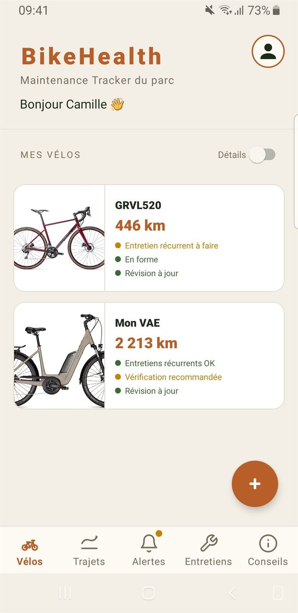

Suivi par composant
Chaîne, cassette, plaquettes, pneus, plateau, roues, batterie et moteur (VAE)… Suis chaque pièce avec ses propres seuils d'alerte personnalisés.
Ton compagnon qui surveille l'usure de tes composants vélo en silence et t'alerte au bon moment, pour ne plus jamais subir une panne surprise ou une facture imprévue.

Pensé pour les cyclistes qui veulent comprendre leur vélo, sans se prendre la tête.
Chaîne, cassette, plaquettes, pneus, plateau, roues, batterie et moteur (VAE)… Suis chaque pièce avec ses propres seuils d'alerte personnalisés.
Définis tes routines (vélo-taff, sortie du dimanche…) et BikeHealth génère automatiquement tes trajets récurrents.
Connecte ton compte Strava et importe automatiquement tes activités vélo. Le kilométrage se met à jour tout seul.
Lubrifier la chaîne, vérifier la pression, contrôler les freins, faire la révision annuelle : BikeHealth t'envoie le bon rappel au bon moment.
Cycliste occasionnel ou mécano du dimanche : choisis ton niveau de détail. L'app s'adapte à ton profil, pas l'inverse.
Renseigne ton mécano préféré : retrouve ses horaires et son téléphone à un tap depuis chaque fiche vélo. Indispensable les jours où ça grince.
Choisis ton mode (Simple ou Avancé) et ton jour de rappel hebdo. Trois minutes, montre en main.
Marque, modèle, kilométrage, photo. Neuf ou déjà roulé, BikeHealth s'adapte.
Vélo-taff, sortie du dimanche, courses du samedi. Ou connecte Strava et oublie.
BikeHealth t'alerte quand un composant approche son seuil ou qu'un entretien est dû. Et pas avant.
Quand tu changes une chaîne ou que tu lubrifies, tu le notes en deux taps. BikeHealth recalcule, le cycle reprend.
BikeHealth arrive prochainement. Inscris-toi pour être parmi les premiers à l'essayer.
Un outil web pour suivre la flotte de tes clients : alertes proactives, prise de RDV, fiches vélos partagées. En cours de développement.
Être tenu au courant